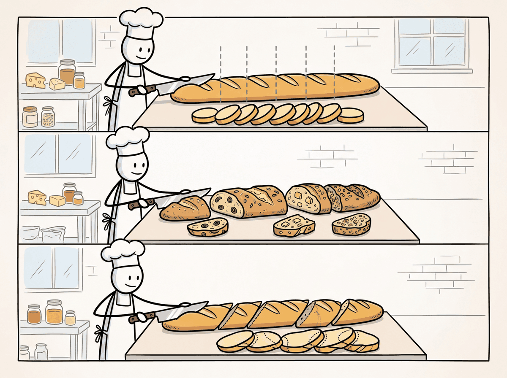

Garbage in, garbage out. But with chunking, it is more like: split wrong, retrieve wrong, answer wrong.
Vec, Slice-Savvy AI Agent
The quality of your RAG system is bounded by the quality of your chunks. No embedding model or vector database can compensate for poorly chunked documents. If a relevant answer spans two chunks that were split in the wrong place, the retriever will never surface it as a single coherent result. Document processing and chunking is where most RAG systems succeed or fail, yet it receives far less attention than model selection or index tuning. This section covers chunking strategies from basic to advanced, document parsing tools for complex formats, and the engineering of production-grade ingestion pipelines. The tokenization concepts from Section 1.5 directly inform chunk size decisions, since models have fixed token-level context windows.
Prerequisites
Effective chunking depends on understanding what embedding models expect as input, so review the embedding model fundamentals in Section 31.1 before proceeding. The tokenization concepts from Section 1.5 are directly relevant because chunk boundaries interact with token limits. This section feeds directly into the RAG pipeline design covered in the next chapter, where chunking quality determines retrieval quality.

Parsing Tools
Before investing time in parsing optimization, test your documents with the simplest tool first. Run PyPDF on a sample of 20 documents and manually inspect the output. If 80% parse cleanly, you may only need a specialized parser for the remaining 20%. Many teams over-engineer their parsing pipeline for edge cases that represent a tiny fraction of their corpus.
- PyPDF / pdfplumber: Basic Python libraries for text extraction from digital PDFs. Fast and lightweight, but struggle with complex layouts, tables, and multi-column text.
- Unstructured.io: An open-source library that combines multiple parsing backends (tesseract OCR, detectron2 layout detection) to handle diverse document types. Identifies elements like titles, narrative text, tables, and images with layout-aware processing.
- LlamaParse: A cloud-based document parsing service from LlamaIndex that uses LLMs to understand document structure. Excels at tables, charts, and complex layouts but introduces latency and API costs.
- Docling: An open-source document parser from IBM that uses vision models for layout analysis. Handles PDFs, DOCX, PPTX, and HTML with high-fidelity structure extraction.
# Document parsing with Unstructured.io
from unstructured.partition.pdf import partition_pdf
# Parse a PDF with layout detection
elements = partition_pdf(
filename="technical_report.pdf",
strategy="hi_res", # Use layout detection model
infer_table_structure=True, # Extract table structure
include_page_breaks=True, # Track page boundaries
)
# Inspect extracted elements
for element in elements[:10]:
print(f"Type: {type(element).__name__:20s} | "
f"Page: {element.metadata.page_number} | "
f"Text: {str(element)[:60]}...")
# Filter by element type
from unstructured.documents.elements import Title, NarrativeText, Table
titles = [e for e in elements if isinstance(e, Title)]
text_blocks = [e for e in elements if isinstance(e, NarrativeText)]
tables = [e for e in elements if isinstance(e, Table)]
print(f"\nExtracted: {len(titles)} titles, "
f"{len(text_blocks)} text blocks, "
f"{len(tables)} tables")31.6.3 Chunking Strategies
Chunk size involves a fundamental tradeoff. Smaller chunks (100 to 200 tokens) produce more precise embeddings because each chunk covers a single topic, improving retrieval precision. However, they may lack sufficient context for the LLM to generate a good answer. Larger chunks (500 to 1000 tokens) provide more context but may cover multiple topics, reducing embedding precision and retrieval recall. Most production systems settle on 256 to 512 tokens as a baseline, then tune based on evaluation results.
A "too-large" chunk problem in practice: imagine asking "what's the recommended dosage?" and getting back a 4-page chunk where the answer is one sentence in paragraph 12. The embedding is dominated by surrounding noise about side effects and contraindications, so cosine similarity to "dosage" is low and the chunk loses to a less relevant but more focused one. Now imagine "too small": you get one sentence "dosage: 5 mg" but no context for whether that's adult or pediatric, oral or IV. Goldilocks chunking lives at 256-512 tokens for most use cases: small enough to be topically focused, large enough to carry one full thought with its disambiguating context.
Developers often assume that smaller chunks improve retrieval because each chunk covers a narrower topic. While this is true for embedding precision, it ignores two critical failure modes. First, when an answer spans two small chunks split at the wrong boundary, neither chunk contains the complete answer, and the retriever may surface only one half. Second, small chunks strip away surrounding context that the LLM needs to interpret the passage correctly. A 100-token chunk saying "the rate increased to 3.5%" is useless without knowing which rate, in which time period. Chunk size must be tuned empirically on your data, not chosen from a general rule. Start at 400 to 512 tokens with 50-token overlap, then use retrieval evaluation metrics (covered in Chapter 42) to find the optimum for your corpus.
Ask ten RAG engineers for their optimal chunk size and you will get twelve answers. The chunking literature is littered with benchmarks "proving" that 256, 512, or 1024 tokens is best, usually on completely different datasets. The real answer is always "it depends," which is the most frustrating and most honest thing in engineering.
Fixed-Size Chunking
Chunk Overlap Geometry.
For a document of length D tokens, chunk size C, and overlap O:
$$\text{Number of chunks}: N = \lceil(D - O) / (C - O)\rceil$$Effective stride: stride = C - O
Overlap ratio: O / C (typically 10% to 20%)
Storage overhead from overlap: (N × C) / D = C / (C - O)
Worked example: A 10,000-token document with C = 512, O = 50:
$$\begin{aligned}\text{stride} &\text{amp};= 512 - 50 = 462 \\ N &\text{amp};= \lceil(10000 - 50) / 462\rceil = \lceil21.5\rceil = 22 \text{chunks}\end{aligned}$$Storage overhead: 512 / 462 = 1.11 × (11% more vectors than zero-overlap chunking).
$$\text{With zero overlap: } \lceil 10000 / 512 \rceil = 20 \text{ chunks}$$The extra 2 chunks ensure no sentence split at a boundary is lost.
The simplest approach splits text into chunks of a fixed number of characters or tokens. While naive, fixed-size chunking is fast, deterministic, and serves as a reasonable baseline.
# Fixed-size chunking with overlap
from typing import List
def fixed_size_chunk(
text: str,
chunk_size: int = 500,
chunk_overlap: int = 50
) -> List[str]:
"""
Split text into fixed-size chunks with overlap.
Args:
text: Input text to chunk
chunk_size: Maximum characters per chunk
chunk_overlap: Characters to overlap between consecutive chunks
"""
chunks = []
start = 0
while start < len(text):
end = start + chunk_size
# If not the last chunk, try to break at a sentence boundary
if end < len(text):
# Look for sentence boundary near the end
for boundary in [". ", ".\n", "? ", "! "]:
last_boundary = text[start:end].rfind(boundary)
if last_boundary > chunk_size * 0.5:
end = start + last_boundary + len(boundary)
break
chunk = text[start:end].strip()
if chunk:
chunks.append(chunk)
# Move start position, accounting for overlap
start = end - chunk_overlap
return chunks
# Example
sample_text = """
Vector databases are specialized systems designed for storing and querying
high-dimensional vectors. They use approximate nearest neighbor algorithms
to find similar vectors efficiently.
The most common algorithm is HNSW, which builds a multi-layer graph structure.
Each layer connects vectors to their nearest neighbors, enabling fast navigation
from any starting point to the target region of the vector space.
Product Quantization reduces memory usage by compressing vectors. Each vector
is split into sub-vectors, and each sub-vector is replaced by its nearest
codebook entry. This can achieve 32x compression with acceptable accuracy loss.
"""
chunks = fixed_size_chunk(sample_text, chunk_size=200, chunk_overlap=30)
for i, chunk in enumerate(chunks):
print(f"Chunk {i} ({len(chunk)} chars): {chunk[:70]}...")The fixed-size overlap loop in Code Fragment 31.6.2 is shown explicitly so you can see exactly where chunk boundaries fall; in production, langchain_text_splitters.RecursiveCharacterTextSplitter does the same windowing while also backing off to paragraph and sentence boundaries. See Section 16.7 for the drop-in version.
Recursive Character Splitting
Recursive character splitting (popularized by LangChain) attempts to split text at the most
semantically meaningful boundary possible. It tries a hierarchy of separators: first by
paragraph (\n\n), then by sentence (\n), then by word ( ),
and finally by character. At each level, if a chunk exceeds the size limit, it is split using the
next separator in the hierarchy.
# Recursive character text splitting (LangChain-style)
from langchain_text_splitters import RecursiveCharacterTextSplitter
splitter = RecursiveCharacterTextSplitter(
chunk_size=400,
chunk_overlap=50,
separators=["\n\n", "\n", ". ", " ", ""],
length_function=len,
is_separator_regex=False,
)
document = """# Introduction to Embeddings
Text embeddings convert natural language into dense vector representations.
These vectors capture semantic meaning, allowing mathematical operations
like cosine similarity to measure how related two pieces of text are.
## Training Approaches
Modern embedding models use contrastive learning. The model is trained to
produce similar vectors for semantically related text pairs and different
vectors for unrelated pairs. Hard negative mining improves training by
providing challenging negative examples that force the model to learn
fine-grained distinctions.
## Applications
Embeddings power semantic search, recommendation systems, clustering,
and retrieval-augmented generation. They serve as the foundation for
virtually every modern NLP application that requires understanding
meaning beyond keyword matching.
"""
chunks = splitter.split_text(document)
for i, chunk in enumerate(chunks):
print(f"Chunk {i} ({len(chunk)} chars):")
print(f" {chunk[:80]}...")
print()Structure-Aware Chunking for Code (Tree-Sitter)
Recursive character splitters work well on prose but produce broken chunks for source code, where the natural boundaries are syntactic (function, class, method, block) rather than typographic (newline, paragraph). Splitting a Python file on blank lines reliably cuts a docstring off its function, or splits the body of an if block from its condition; the resulting chunks embed badly because the local context is wrong. The fix is to chunk with the abstract syntax tree.
tree-sitter is the de-facto multi-language parser used by GitHub, Neovim, and most IDE language servers; it ships incremental parsers for over 150 languages and exposes a uniform query API across all of them. A code chunker walks the tree-sitter parse tree, emits a chunk per top-level definition (function, class, module-level constant), and falls back to splitting the body of a too-large definition along nested block boundaries so no chunk exceeds the embedding model's token limit. LangChain wraps this as RecursiveCharacterTextSplitter.from_language(language=Language.PYTHON), which uses tree-sitter under the hood to choose language-aware separators. The same pattern applies to other structured documents: HTML headings, Markdown sections, JSON keys, SQL statements, and protobuf messages are all natural chunk boundaries that a structure-aware splitter respects and a character-count splitter destroys.
Semantic Chunking
31.6.1 The Document Processing Pipeline
Before text can be embedded and indexed, raw documents must pass through a multi-stage processing pipeline. Each stage introduces potential failure modes that can degrade retrieval quality downstream. outlines the complete ingestion pipeline from raw files to indexed vectors.
- Loading: Reading raw files from various sources (file systems, S3, URLs, databases, APIs).
- Parsing: Extracting text and structure from complex formats (PDF, DOCX, HTML, slides, scanned images).
- Cleaning: Removing headers, footers, page numbers, boilerplate, and artifacts from parsing.
- Chunking: Splitting cleaned text into segments suitable for embedding and retrieval.
- Enrichment: Adding metadata (source, page number, section title, date) to each chunk.
- Embedding: Converting chunks to vectors using the selected embedding model.
- Indexing: Storing vectors and metadata in the vector database.
The chunking problem in document processing is, at its core, a segmentation problem with deep roots in psycholinguistics and information theory. George Miller's seminal 1956 paper "The Magical Number Seven" showed that human working memory processes information in "chunks," and that the boundaries between chunks are determined by semantic coherence, not arbitrary length. The same principle applies to RAG: chunks that align with natural discourse boundaries (paragraphs, sections, topic shifts) produce better retrieval results than chunks split at arbitrary token counts. Linguists study this under the name "discourse segmentation" or "topic modeling," and the computational approaches (TextTiling by Hearst, 1997; Bayesian topic segmentation by Eisenstein and Barzilay, 2008) predate RAG by decades. Semantic chunking strategies in modern RAG systems are rediscovering these linguistic principles: the best chunk boundary is where the topic changes, which is precisely where human readers would naturally pause and begin processing a new idea.
31.6.2 Document Parsing
The ingestion pipeline begins where every RAG project hits its first reality check: turning the messy formats your users actually have (PDFs, scanned images, HTML, Office documents) into clean text that downstream chunking and embedding can use. PDFs deserve special attention because they dominate enterprise corpora and they break naive text extraction in non-obvious ways.
The PDF Challenge
PDFs are the most common and most difficult document format for RAG systems. A PDF is fundamentally a page layout format, not a text format. Text is stored as positioned glyphs on a page, with no inherent reading order, paragraph structure, or semantic hierarchy. Tables, multi-column layouts, headers, footers, and embedded images all require specialized handling. Scanned PDFs contain only images, requiring OCR before text extraction is even possible. For an alternative approach that skips text extraction entirely, see Section 31.8 on vision-based document retrieval.

Semantic chunking uses the embedding model itself to determine chunk boundaries. It computes embeddings for each sentence (or small segment), then identifies natural breakpoints where the cosine similarity between consecutive segments drops below a threshold. This produces chunks that are semantically coherent, with boundaries aligned to topic transitions.
# Semantic chunking based on embedding similarity
import numpy as np
from sentence_transformers import SentenceTransformer
from typing import List, Tuple
import re
def semantic_chunk(
text: str,
model: SentenceTransformer,
threshold_percentile: int = 25,
min_chunk_size: int = 100,
) -> List[str]:
"""
Split text into semantically coherent chunks by detecting
topic boundaries using embedding similarity.
"""
# Split into sentences
sentences = re.split(r'(?<=[.!?])\s+', text.strip())
sentences = [s for s in sentences if len(s) > 10]
if len(sentences) <= 1:
return [text]
# Embed all sentences
embeddings = model.encode(sentences, normalize_embeddings=True)
# Compute cosine similarity between consecutive sentences
similarities = []
for i in range(len(embeddings) - 1):
sim = np.dot(embeddings[i], embeddings[i + 1])
similarities.append(sim)
# Find breakpoints where similarity drops below threshold
threshold = np.percentile(similarities, threshold_percentile)
breakpoints = [i + 1 for i, sim in enumerate(similarities)
if sim < threshold]
# Build chunks from breakpoints
chunks = []
start = 0
for bp in breakpoints:
chunk = " ".join(sentences[start:bp])
if len(chunk) >= min_chunk_size:
chunks.append(chunk)
start = bp
# Add remaining sentences
final_chunk = " ".join(sentences[start:])
if final_chunk:
chunks.append(final_chunk)
return chunks
# Example usage
model = SentenceTransformer("all-MiniLM-L6-v2")
text = """
Machine learning models learn patterns from data. They adjust internal
parameters to minimize prediction errors. The training process uses
gradient descent to iteratively improve the model.
Vector databases store high-dimensional vectors. They use algorithms like
HNSW for fast approximate nearest neighbor search. These systems are
critical for semantic search applications.
Python is the most popular language for data science. It provides libraries
like NumPy, pandas, and scikit-learn. The ecosystem continues to grow rapidly.
"""
chunks = semantic_chunk(text, model)
for i, chunk in enumerate(chunks):
print(f"Semantic Chunk {i}: {chunk[:70]}...")Structure-Aware Chunking
When documents have clear structural elements (headings, sections, subsections), the most effective strategy respects this structure. Structure-aware chunking uses document hierarchy to create chunks that align with the author's intended organization. A section with its heading forms a natural chunk; a table stays intact rather than being split across chunks. compares these three approaches.
31.6.4 Overlap and Parent-Child Retrieval
Structure-aware chunking preserves semantic units, but no chunking strategy is perfect: ideas that span boundaries will sometimes be split. Two complementary fixes mitigate this loss: overlap (where consecutive chunks share a few tokens of context) and parent-child retrieval (where small chunks are indexed for matching but larger chunks are returned to the LLM). We treat overlap first because every system needs it.
Chunk Overlap
Adding overlap between consecutive chunks ensures that sentences at chunk boundaries are not lost in context. A typical overlap of 10 to 20% of the chunk size (e.g., 50 to 100 tokens for a 500-token chunk) provides continuity without excessive duplication. Too much overlap wastes storage and can introduce duplicate results; too little risks losing context at boundaries.
Parent-Child (Small-to-Big) Retrieval
The parent-child strategy addresses the chunk-size dilemma by decoupling the retrieval unit from the context unit. Small chunks (child chunks, 100 to 200 tokens) are used for embedding and retrieval because their focused content produces precise embeddings. When a child chunk is retrieved, the system returns the larger parent chunk (500 to 1000 tokens) that contains it, providing the LLM with sufficient context to generate a high-quality answer.
# Parent-child chunking strategy
from langchain_text_splitters import RecursiveCharacterTextSplitter
from typing import List, Dict
import uuid
def create_parent_child_chunks(
text: str,
parent_chunk_size: int = 1000,
child_chunk_size: int = 200,
child_overlap: int = 20,
) -> List[Dict]:
"""
Create a two-tier chunking structure for parent-child retrieval.
Child chunks are used for embedding and retrieval.
Parent chunks are returned for LLM context.
"""
# Create parent chunks
parent_splitter = RecursiveCharacterTextSplitter(
chunk_size=parent_chunk_size,
chunk_overlap=0,
)
parent_chunks = parent_splitter.split_text(text)
all_chunks = []
for parent_idx, parent_text in enumerate(parent_chunks):
parent_id = str(uuid.uuid4())
# Store parent chunk
all_chunks.append({
"id": parent_id,
"text": parent_text,
"type": "parent",
"parent_id": None,
})
# Create child chunks from this parent
child_splitter = RecursiveCharacterTextSplitter(
chunk_size=child_chunk_size,
chunk_overlap=child_overlap,
)
child_texts = child_splitter.split_text(parent_text)
for child_idx, child_text in enumerate(child_texts):
all_chunks.append({
"id": str(uuid.uuid4()),
"text": child_text,
"type": "child",
"parent_id": parent_id,
})
parents = [c for c in all_chunks if c["type"] == "parent"]
children = [c for c in all_chunks if c["type"] == "child"]
print(f"Created {len(parents)} parents, {len(children)} children")
print(f"Avg parent size: {sum(len(p['text']) for p in parents) / len(parents):.0f} chars")
print(f"Avg child size: {sum(len(c['text']) for c in children) / len(children):.0f} chars")
return all_chunks
# Usage: embed children, retrieve parents
# At query time:
# 1. Search child embeddings for top-k matches
# 2. For each matching child, look up its parent_id
# 3. Return deduplicated parent chunks to the LLMA variation of parent-child retrieval is sentence window retrieval. Each sentence is embedded individually for maximum retrieval precision. When a sentence matches, the system returns a window of surrounding sentences (e.g., 3 sentences before and after) as context. This provides a fine-grained retrieval unit with a flexible context window, and it avoids the need to predefine parent chunk boundaries. LlamaIndex provides a built-in SentenceWindowNodeParser for this pattern.
31.6.5 Chunking Strategy Comparison
| Strategy | Pros | Cons | Best For |
|---|---|---|---|
| Fixed-size | Simple, fast, predictable | Splits mid-sentence, ignores structure | Baseline, homogeneous text |
| Recursive | Respects natural boundaries, configurable | May still break complex elements | General purpose (default choice) |
| Semantic | Topic-coherent chunks, data-driven boundaries | Slower (requires embeddings), variable sizes | Long-form content, mixed topics |
| Structure-aware | Preserves document hierarchy, best quality | Requires structural parsing, format-specific | Structured docs (manuals, reports) |
| Parent-child | Precise retrieval with rich context | More complex pipeline, extra storage | High-stakes RAG applications |
| Sentence window | Maximum retrieval precision | Many embeddings, higher index cost | Q&A over dense technical content |
- Chunking quality bounds RAG quality. No downstream component can compensate for chunks that split relevant information or mix unrelated topics.
- Recursive character splitting is the best default for most text content, balancing simplicity with respect for natural text boundaries.
- Semantic chunking produces the most coherent chunks by detecting topic boundaries via embedding similarity, at the cost of additional computation.
- Structure-aware chunking is essential for formatted documents (PDFs, HTML, Markdown) where headings, tables, and figures define natural semantic units.
- Parent-child retrieval resolves the chunk-size tradeoff by using small chunks for precise retrieval and large chunks for LLM context.
Show Answer
Show Answer
Show Answer
Show Answer
Take a single 20-page Wikipedia article on a person and chunk it three ways: fixed-size 100 tokens, fixed-size 500 tokens, and recursive character splitting with 500 tokens and 50-token overlap. Issue the query "Where was X born?" against each index and report the top-3 retrieved chunks. Identify the chunking strategy that returns the birthplace fact in the top-3.
Answer Sketch
Fixed-size 100 tokens often slices the birth fact across two chunks (e.g., "born in" lands at the end of chunk K, the city name starts chunk K+1), so neither chunk embeds well for the query. Fixed-size 500 tokens usually contains the full sentence and retrieves correctly. Recursive character splitting with 50-token overlap is the most robust: even if a boundary lands mid-sentence, the next chunk overlaps and still contains the city name. This is the experimental motivation for overlap.
Find an academic PDF with a multi-page table (any clinical trial paper works). Run a naive PDF-to-text extraction (pypdf or pdfminer) and a structure-aware extractor (Unstructured.io or Docling). Compare the text representations of the table and identify two specific failure modes of the naive extractor.
Answer Sketch
Common failures of naive extraction: (1) column values read top-to-bottom on each page so row alignment is destroyed, e.g., all "treatment" values appear as a list before any "control" values; (2) page-boundary table continuations are split into separate chunks with no shared header. Structure-aware tools preserve the row-level grouping and emit either Markdown tables or CSV. A retriever that gets the failure-mode text will hallucinate when asked "what was the outcome in the treatment group?".
What Comes Next
The next section, Section 31.7: Production RAG Pipelines, Evaluation & Topic Modeling, completes the document-processing story by covering the ETL machinery (incremental indexing, metadata enrichment), systematic chunking evaluation, and how the same embeddings power BERTopic for topic discovery.